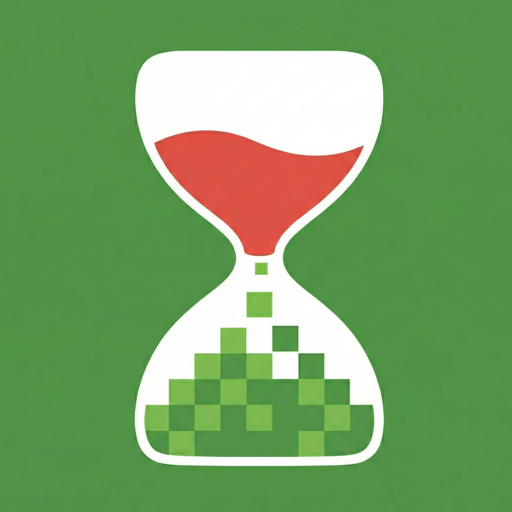
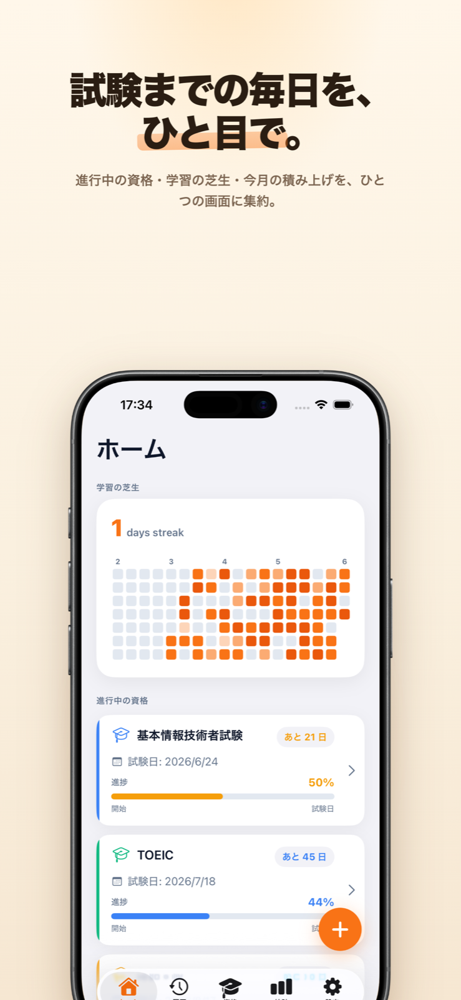
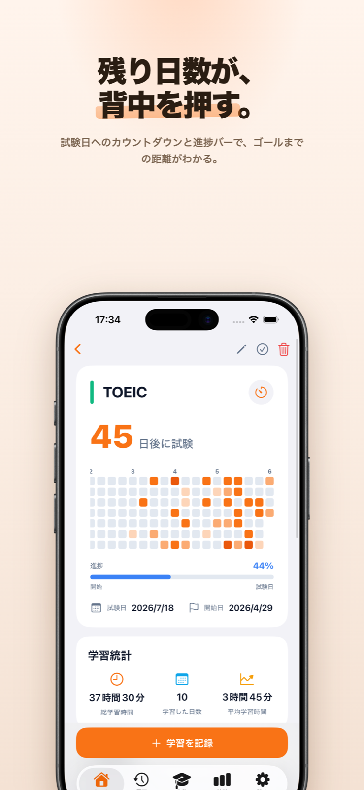

試験日を登録
目標日と科目を決め、残り時間を意識して学習できます。

合格ログ
Goukaku Log
STUDY PROGRESS · 仕事・学習
資格試験の予定、学習時間、進み具合をまとめ、合格までの毎日を支える学習記録です。


目標日と科目を決め、残り時間を意識して学習できます。
学習時間や内容を残し、取り組みの量を振り返れます。
日々の記録から、目標までのペースを確認できます。
学習や試験日に合わせて、必要なタイミングを知らせます。
Made for you